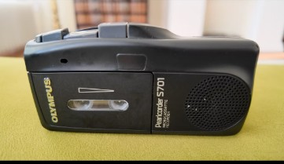
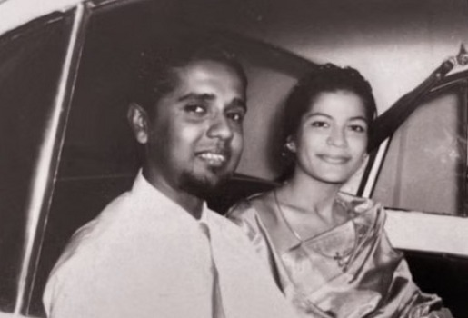
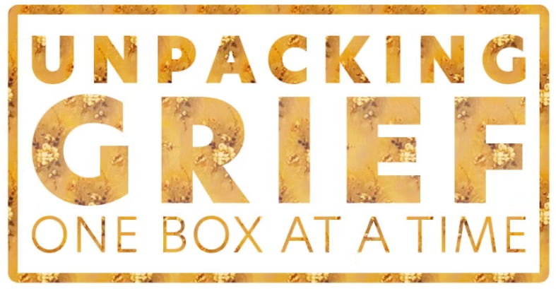
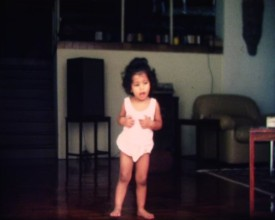
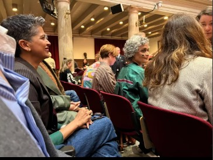

Beep. Welcome to the Happy House of Hanibelsz
For years I remembered that answering machine message in my mum's voice. Then I found the little micro tape.
Read the entry

Seventeen days by my mother's side, seventeen boxes shipped after her passing.
A documentary by Amelia Hanibelsz about loss, love, and what remains.
Each box is one seventeenth of the goal.
Tax-deductible for US donors. Gifts are received by our fiscal sponsor, the Center for Independent Documentary, a 501(c)(3) nonprofit.
After my parents passed away, I inherited not just grief but a home overflowing with memories. My mother held on to everything, and her house in Melbourne was bursting with objects that carried pieces of our lives. I packed what I could carry and left what I could not hold.
Seventeen boxes were shipped from Australia to The Hague, and with them came the weight and wonder of a family archive.
…grief as a universal condition, messy, uncurated, and often hidden away.
This film is my attempt to make meaning out of these fragments. With each box I open, I discover not only what I have lost, but what I continue to find, and in turn what I need to let go. It explores grief as a universal condition, messy, uncurated, and often hidden away, and shows how magic, love, humor, and storytelling can help us carry it together.
Amelia Hanibelsz, director
Grief touches everyone, yet so many of us carry it alone. Your gift turns one family's archive into a film that opens a space for understanding, connection and healing.
The footage is shot and the boxes are open. What remains is the work of finishing: restoring the tapes and reels, animating the objects, editing, sound and licensing.
Your gift is fully tax-deductible in the US. Unpacking Grief is a fiscally sponsored project of the Center for Independent Documentary (CID), a 501(c)(3) nonprofit. CID receives your gift on behalf of the film.
Choose an amount
Helps license one piece of archival footage for the film.
You will finish on CID's secure donation page at documentaries.org. Choose card payment there; the check address is only for gifts by mail.
Giving from outside the US? Your gift is just as welcome and goes to the film in the same way. It is tax-deductible for US taxpayers only.
Thinking of a larger gift? Talk to the producers
Center for Independent Documentary. CID's programs are supported by the National Endowment for the Arts, the National Endowment for the Humanities and Mass Cultural Council.
[A short endorsement from a filmmaker, programmer or supporter.]
Notes from the production diary, written as each box is opened.

For years I remembered that answering machine message in my mum's voice. Then I found the little micro tape.
Read the entry
Organising footage for my editor, I found film reel 015. I am two years old, dancing like no one is watching.
Read the entry
A spare ticket from a new friend in The Hague, and an evening with Arundhati Roy reading about her mother.
Read the entrySend this page to someone who is carrying a loss, or who loves a good family archive.
The pitch deck covers the creative approach, budget and distribution plan.
Pitch deck (PDF) Talk to the producersQuestions about the film, screenings, press or a larger gift? Write to us and a producer will reply.
Requesting the work sample? Pick Sample access and tell us your organisation and why you would like to watch.